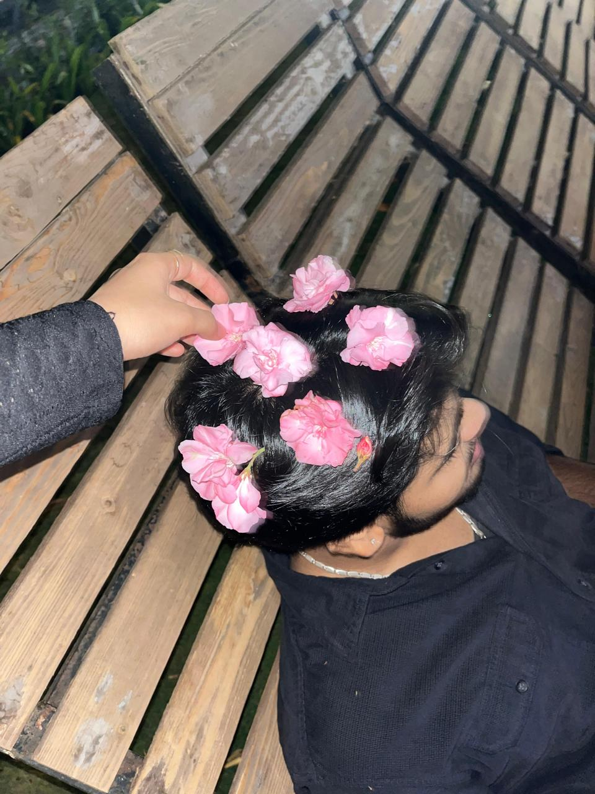

Our Story
🌸 We Met
One random day that changed everything.
💬 Started Talking
Long conversations became my favorite part of every day.
🤍 Friends
You slowly became my comfort person.
❤️ 9 June
The day we finally became us.
One random day that changed everything.
Long conversations became my favorite part of every day.
You slowly became my comfort person.
The day we finally became us.



Dear boyfieee,
Click the button to reveal the first reason. 🤍
muahhhh muahhh 😘💋💋💕
Its funny how life changes so quietly. kuch time phele you were just someone i know from college aur abhi you have became
everything for me to whom i can share everthing with my happiness , my comfort , disomfort , pain , laugh everthing.
I have never imagined conversations which we have started from bike rides , late-night calls , sharing cute little moments
will become one of my favourite memories.
Somehow you have became my home like person
Thank you for being patient with me , for making my ordinary days special , for making me laugh even when i am annoyed ,
for accepting every version of me- even jb mai itta gussa krti choti choti cheezo pe tb bhi but tu hi dilata h lekin gussa bhi
and for loving me itta saaraaaaaaa hehee:)
Distance isn't easy,
but every message,
every call,
and every memory reminds me
that you're worth every kilometer.
Being in long distance at the starting of our relationship is something both of us never imagined .I miss seeing you,
I miss the random moments we shared, I miss bike pe saath ghumna back hug karna tereko aur sab kuch but theek ab to
thodu si hi time ki baat hai fir bahut tight se hug karungi tereko bahut sarri kissi dungi passionate wali bhiiii.
And there's one thing this month has taught me
it's that love isn't measured by how close we are physically
it's measured by the effort we make to stay close to each other's hearts.
And You make my ordinary days feel special. Every notification from you makes me smile.
Every call becomes the best part of my day. Even the silence when we're together somehow feels comforting.
Thank you for choosing me.
Thank you for making me feel seen , heard, and cared for.
Thank you for becoming someone I can call home.
This is only our first month, and I know we still have so much to learn about each other
We'll have disagreements, busy days, boring days. But I hope tab bhi , we keep choosing eachother ,
just like we did on 9 June.
Mere ko nhi pta future kaisa hoga kya hoga , but i know one thing for sure:
tu usme mere saath jarror hoga .
Here's to more memories, more laughter, more bike rides, more sunsets, more random conversations, more adventures,
and more love with you.
Happy One Month, Shlokkkkk.
I love you more than I can put into words, and i can't wait to see you jldi seee.
forever yours,
Sanika ❤️
"If I could relive this month all over again, I'd still choose you. Every single time. ❤️"
15 Reasons Why I Love You ❤️
I loveeeee youuuuu bahuttttt saraaaa ❤️